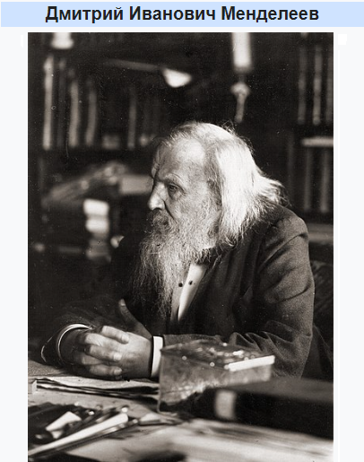

О Менделееве
Немного о нем
Дми́трий Ива́нович Менделе́ев (27 января [8 февраля] 1834, Тобольск — 20 января [2 февраля] 1907, Санкт-Петербург) — русский учёный-энциклопедист: химик, физикохимик, физик, метролог, экономист, технолог, геолог, метеоролог, нефтяник, педагог, воздухоплаватель, приборостроитель. Профессор Императорского Санкт-Петербургского университета; член-корреспондент (по разряду «физический») Императорской Санкт-Петербургской Академии наук. Среди самых известных открытий — периодический закон химических элементов, один из фундаментальных законов мироздания, неотъемлемый для всего естествознания. Автор классического труда «Основы химии». Тайный советник.
Несколько фактов о Менделееве:
Факт из студенчества
Во время обучения в педагогическом институте из-за посредственной успеваемости Менделеев был оставлен на второй год.
Факт из его научных работ
Вопреки распространённому мифу, он не изобретал водку. Миф возник из-за публикации им научного труда о соединении воды и спирта, которая к водке как таковой никакого отношения не имела.
Факт из жизни
Около 30 лет своей жизни Менделеев посвятил работе в Санкт-Петербургском университете. Он покинул его стены в знак протеста, когда министр народного просвещения отказался принять студенческую петицию, в которой они требовали свободы слова.
Научная деятельность
Д. И. Менделеев является автором фундаментальных исследований по химии, физике, метрологии, метеорологии, экономике, основополагающих трудов по воздухоплаванию, сельскому хозяйству, химической технологии, народному просвещению и других работ, тесно связанных с потребностями развития производительных сил России.
Д. И. Менделеев является автором фундаментальных исследований по химии, физике, метрологии, метеорологии, экономике, основополагающих трудов по воздухоплаванию, сельскому хозяйству, химической технологии, народному просвещению и других работ, тесно связанных с потребностями развития производительных сил России. Менделеев исследовал (1854—1856) явления изоморфизма, раскрывающие отношения между кристаллической формой и химическим составом соединений, а также зависимость свойств элементов от величины их атомных объёмов. Открыл в 1860 году «температуру абсолютного кипения жидкостей», или критическую температуру. Сконструировал в 1859 году — прибор для определения плотности жидкости. Создал в 1865—1887 годах гидратную теорию растворов. Развил идеи о существовании соединений переменного состава. Исследуя газы, нашёл в 1874 году общее уравнение состояния идеального газа, включающее, как частность, зависимость состояния газа от температуры, которую в 1834 году обнаружил физик Бенуа Поль Эмиль Клапейрон (уравнение Клапейрона — Менделеева). В 1877 году выдвинул гипотезу происхождения нефти из карбидов тяжёлых металлов (на сегодняшний день большинством учёных не принимается); а также предложил принцип дробной перегонки при переработке нефти.